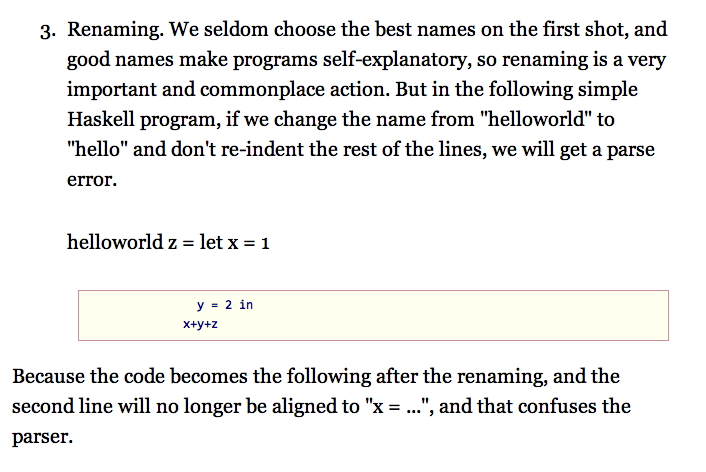

ææä¹åçåæåºæ¬ä¸è½¬æ¢æäº markdown æ ¼å¼ãæåç° markdown è½ç¶å¨ç¼è¾å¨éçèµ·æ¥æ¯ HTML æ¸ æ°ä¸äºï¼ä½ä¹æä¸äºä¸è¶³ã
è¿äº markup è¯è¨çæ ¼å¼é½æç¹åææ¬ç§çæ¶åç»æç¸åçä¸ç§âæ ååè¯å·æ è®°è¯è¨âï¼å 为ä»æ¯ä¸å¦è±è¯èå¸ï¼ãå½æ¶æåäºä¸ä¸ª1000æ¥è¡ç Perl èæ¬ï¼å¯ä»¥æè¿ç§ç®åçæ è®°è¯è¨è½¬æ¢æç¾è§ç LaTeX æ ¼å¼ææ¡£ï¼å¹¶ä¸å¸¦æå好ç Tk å¾å½¢çé¢ãç°å¨åæ³èµ·æ¥ï¼æé£æ¶åç设计就已ç»ç¸å½å è¿äºãè·æçè¯è¨ç¸æ¯ï¼è¿äº blog ç¨ç markup è¯è¨çæ¯å°å·«è§å¤§å·«äºï¼èä¸é®é¢å¤å¤ãæç¹è·é¢äºï¼è¿æ¯å头æ¥çç markdown çé®é¢å§ã
Markdown å®é ä¸éç¨çæ¯ç±»ä¼¼ Python å Haskell ç layout è¯æ³ã
æå·²ç»å¨ä¸ç¯è±æåæéæå°äº layout è¯æ³çå¤ç§é®é¢ãå ä¸ºç©ºæ ¼çæ°éå³å®äºææ¡£çç»æï¼è¿ç§ææ¡£æ ¼å¼ç¸å½çâèå¼±âãç¨å¾®å°æä¸ä¸¤ä¸ªç©ºæ ¼ï¼å°±ä¼åºç°ä¸å¯é¢æµçç»æãè¿ç§ç°è±¡å¨âitemizeâå é¨ç代ç åæ容æåºç°ãå 为æ¯ä¸ª item 带æ¥äºç¼©è¿ï¼æ以å é¨ç代ç å¿ é¡»æ¯ item ç缩è¿å¤4ä¸ªç©ºæ ¼ï¼æè½è¢«æå°æ£ç¡®çä½ç½®ãæ¯å¦æ转æ¢åæçæ¶åå¤æ¬¡åºç°ä»¥ä¸çæ åµï¼

è¿éçé®é¢æ¯ï¼ä»£ç éç第ä¸è¡ helloworld z = let x = 1 å 为缩è¿ä¸å¤ï¼è¢«æ¾å°äºä»£ç åå¤é¢ãä½æ¯ä¸ºäºåç¡®ç缩è¿æèè´¹çç²¾åï¼å
¶å®æ¯ç´æ¥æ <pre> è¿æ ·ç tag è¿è¦å¤ã
ç¹æ®å符çéæ©ä¸åç
markdown 对ç¹æ®å符ç使ç¨ä¸å¤§åçãæå¤æ¬¡åç°æ档段è½æ´æ®µçåææä½ï¼å°±æ¯å 为åæ¥çææ¡£éåºç°äº x*y è¿æ ·ç表达å¼ãå¨ç¨åºåçä¸çéï¼âä¹æ³âæ¾ç¶æ¯â强è°âæ´å é¢ç¹ãæ * ç¨äºæ è®°â强è°âï¼å®é
ä¸æä¸ä¸ªé常æç¨çå符ç¨å¨äºå¾ä¸é¢ç¹çç¨éã
表达åç¸å½æé
å¨å¾å¤ç»èä¸ï¼markdown 并ä¸è½è¡¨è¾¾ææ³è¦çæ ¼å¼ãæ¯å¦å®ä¸è½æ£ç¡®çæå
¥æè¡ <br>ãå¦æä½ æ两åç´§æ¥å¨ä¸èµ·ç代ç ï¼ä½ä½ ä¸æ³æå®ä»¬è¿å¨ä¸èµ·ï¼markdown éè¦ç»ä½ è¿å¨ä¸èµ·â¦â¦ äºæ¯æå°±åç°èªå·±å å
¥äºè¶æ¥è¶å¤ç HTMLã
è¿å¨å¾ççè¯æ³ä¸å°±æ´å ææ¾ï¼markdown å¼å
¥äº  è¿æ ·çæ ¼å¼ï¼å
¶å®æ¯èµ· HTML è¿è¦é¾çåä¸ä¸è´ãæ¯å¦ç°å¨å®ä»ç¶æ æ³è¡¨è¾¾å¾çç大å°ï¼è¿æ¯ç¸å½éè¦çä¿¡æ¯ãæ以æè§å¾ markdown çè¯æ³å·²ç»æ¾ç¤ºåºäºå®çå¼±ç¹ï¼å¦æå®è¦è¡¨è¾¾æ´å¤æçä¿¡æ¯ï¼å°±ä¼åå¾æ¯ HTML è¿è¦é¾è®°ï¼é¾çãæ以对äºå¾çï¼æè§å¾è¿ä¸å¦ç´æ¥ç¨ HTML ç <img> ã
æ以æ»çæè§æ¯ markdown å¼å ¥äºå¤ªå¤çâè¯æ³âï¼ä»¥è³äºç¨å¾®å¤æä¸ç¹çä¿¡æ¯è¡¨è¾¾èµ·æ¥è¿ä¸å¦ HTML æ¥çç´æ¥ãç°å¨å°±è¿æ ·å ååçå§ãä¹è®¸è¿æ®µæ¶é´èªå·±è®¾è®¡ä¸ä¸ªæ ¼å¼ã